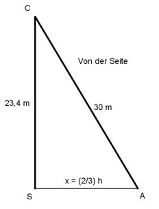

Flächenberechnungen Aufgabe 67
Ein Mast ist 23,4 m hoch.
Er wird von 3 Seilen mit einer Länge von 30 m gehalten.
Deren Fußpunkte bilden ein gleichseitiges Dreieck.
Wie weit sind die Fußpunkte voneinander entfernt?

Satz von Pythagoras im Dreieck SAC:
30² = 23,4² + x² |-23,4²
900 - 547,56 = x²
x² = 352,44 |√
x = 18,8 m
2
x = --- * h | *3
3
3 * x = 2 * h |:2
3 3
h = --- * x = --- * 18,8 = 28,2 m
2 2
 Satz von Pythagoras im Dreieck ABC:
l l
l² = (---)² + h² |-(---)²
2 2
l
l² - (---)² = h²
2
l²
l² - ---- = h²
4
3
--- l² = h² |*4
4
3 * l² = 4 * h² |:3
4 * 28,2²
l² = ----------- = 1060,3 |√
3
l = 32,6 m
Satz von Pythagoras im Dreieck ABC:
l l
l² = (---)² + h² |-(---)²
2 2
l
l² - (---)² = h²
2
l²
l² - ---- = h²
4
3
--- l² = h² |*4
4
3 * l² = 4 * h² |:3
4 * 28,2²
l² = ----------- = 1060,3 |√
3
l = 32,6 m